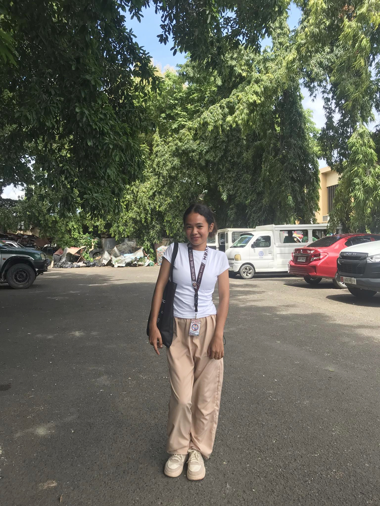

Schedule
Instructors
-

HipHop Dance Choreographer
Name: Marrion Estoce
Address: Talibon, Bohol
City: Bohol
Phone Number: 09503446761
Email Address: estocemarrion@gmail.com
Marrion Estoce, known mononymously as Ion, is a student, singer, and dancer. She is a member of the School Performing Arts group, which debuted under NCBI School since then. She is passionate in teaching her co-dancers and aspirants to be more fluent in dancing.
-
Ballet Dance Choreographer
Name: Claire Casalhay
Address: Jagna, Bohol
City: Bohol
Phone Number: 09535276561
Email Address: casalhayClaire@gmail.com
The Filipino choreographer Claire Casalhay revisited the roots of ballet; both made Filipino ballet a contemporary, experimental, and philosophical art. Neither was afraid to cross boundaries and test the traditions of ballet. Like all great choreographers she also did some choreography that has been known by many people across the Philippines.
-
Modern Dance Choreographer
Name: Mark Andrey Calimot
Address: Talibon, Bohol
City: Bohol
Phone Number: 09535276561
Email Address: calimotmarkandrey@gmail.com
At his young age he is passionate in teaching a dance choreography for Modern Dance. Talented and results-oriented choreographer with a proven track record of developing dynamic dance routines, overseeing rehearsals, assessing dancer proficiency, and instructing students in diverse dance genres.
-
Belly Dance Choreographer
Name: Jellia Mae Roda Turtoga
Address: Talibon, Bohol
City: Bohol
Phone Number: 09535276561
Email Address: rodajelliamae@gmail.com
Accomplished Dance Choreographer with a Bachelor’s degree and diverse performance history in ballet, contemporary, and jazz. Skilled in choreography and teaching, with a proven ability to cultivate a love for dance among students through engaging, high-caliber programs. Eager to advance a world-class dance curriculum that highlights student creativity and performance.
-
Ballroom Dance Choreographer
Name: Joseph Germen Capin Jr.
Address: Talibon, Bohol
City: Bohol
Phone Number: 09535276561
Email Address: germencapin@gmail.com
Passionate and creative ballroom dance choreographer with 3 years of experience in developing innovative routines and teaching various dance styles. Seeking to leverage expertise in choreography and performance to enhance artistic productions and inspire dancers.
-
Contemporary Dance Choreographer
Name: Princess Sanchez
Address: Talibon, Bohol
City: Bohol
Phone Number: 09535276561
Email Address: sanchezprincess@gmail.com
Dynamic and innovative contemporary dance choreographer with 5 years of experience in creating and directing original works. Passionate about exploring interdisciplinary collaborations and pushing the boundaries of contemporary dance. Seeking opportunities to contribute my artistic vision and expertise in a creative environment.